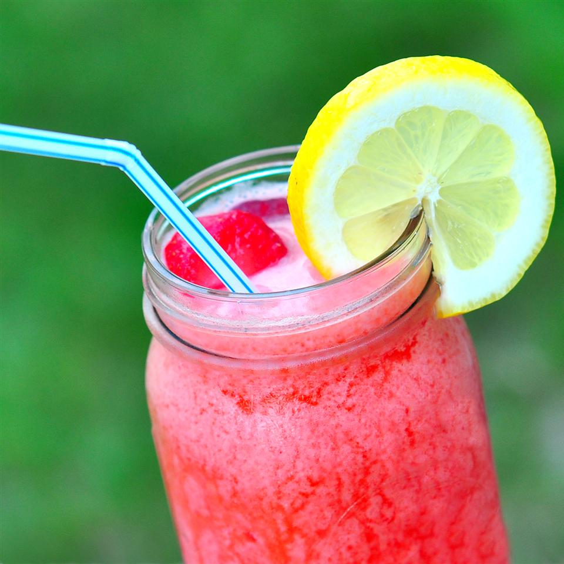

Strawberry Lemonade

Make your own strawberry lemonade slushie
Ingredients
- 2 cups ice cubes
- 1 cup water
- 1 (6 ounce) can frozen lemonade concentrate
- 5 large fresh strawberries, hulled
Steps
- Place the ice cubes, water and lemonade concentrate into the container of
a blender. Process until ice is finely blended. Add strawberries, and puree until
well blended. Taste, and adjust flavors if you like.
Back to Homepage